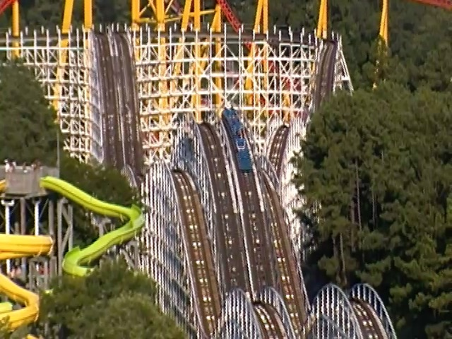
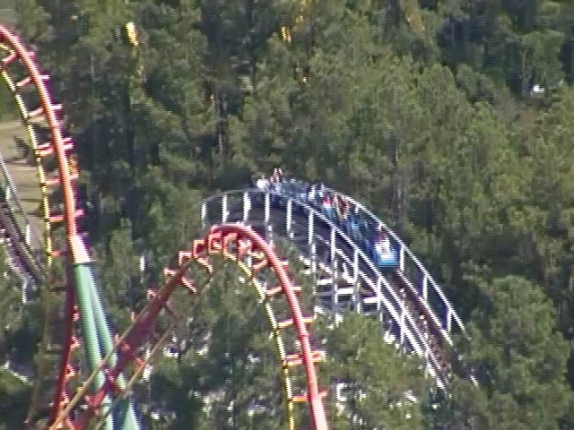
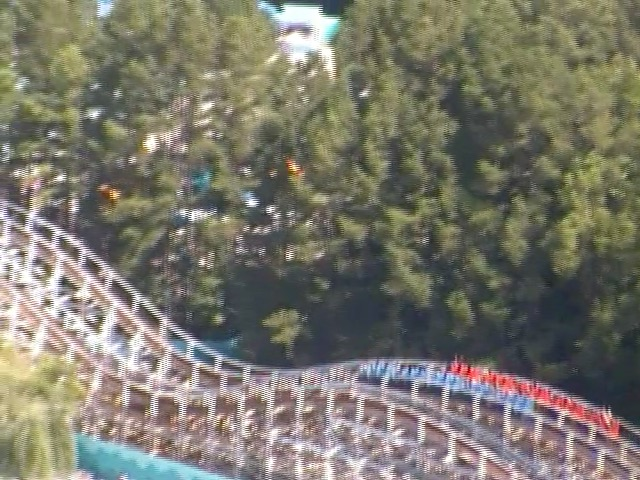
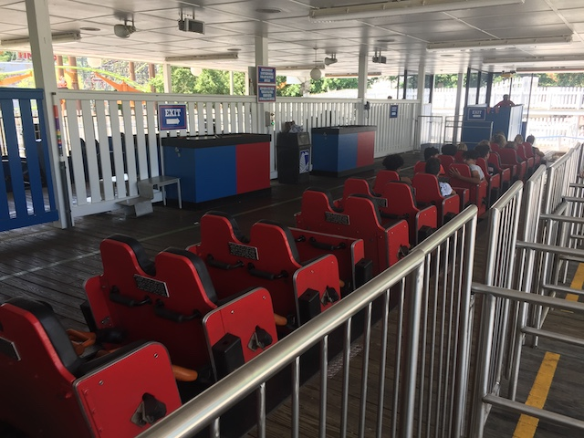

| |
Racer 75 Review

We're here at Kings Dominion. Today's ride we'll be reviewing is Racer 75. This is one of the first coasters to come to Kings Dominion and is the oldest non-kiddy coaster in the park. Anyways, after getting in the trains, we dispatch. We go around a turn and into some straight track. So far, it's nice and relaxing. But anyways, we reach the lifthill. We begin to climb the lifthill, when to your horror, they have showed up. Those assholes on the other side of Racer 75 actually had the guts to challenge us to a coaster race. Well no problem. Anyways, we accept and begin the coaster race. After shouting random insults such as "HEY ASSHOLES!!! YOUR SO CALLED REBEL YELL SOUNDS LIKE A CAT HAVING A STROKE!!! WE KICKED YOUR ASS BEFORE AND WE'RE ABOUT TO DO IT AGAIN!!!", you shake fists at each other and declare yourselves enemies. Then you can't help but angrily glare at the other side. You begin to hate everything about them. The way they dress, the way they talk, the way the ride on the wrong side of Racer 75. But soon enough, we make it to the top. As we slowly crest the lifthill, we look at the other side and give them the nastiest glare you can possibly make. Then as we head down the first drop, you begin to notice that the other side is smiling. Poor pathetic fools just sitting and enjoying the ride. Little do they know that we will kick their ass and ever so epicly defeat them. So let them have their precious little bit of fun. For soon they will suffer. Soon they will be humiliated. Soon they will feel our wrath. But, to do that, we must shred through this course. Anyways, onto these two small pathetic airtimeless hills. And.....whoa! Is this ride full of potholes? Anyways, after that's over, we rip over another big hill. There's no airtime here. But we get another chance to glare at our enemies! If we're winning, turn around and laugh at those poor pathetic fools! If we're losing, SH*T!!! WE MUST CATCH UP!!! THE ENEMY CAN NOT WIN!!! We then go through two more tiny hills that offer no airtime at all, and honestly, are kind of rough. We then head up into another big hill. At this point, we split up from those assholes. We are going this way and they are going that way. And as we all learned in kindergarten, This Way > That Way. And that's when there aren't any wrong side of Racer 75 assholes that way. So now that way is even worse. Don't get distracted by the great view of I305 (It really is a great view. Wish POVs were allowed because these views really are amazing). As we head this way, we drop down and go through another airtime hill. Only problem is....there's no airtime. But that's good. Airtime is a distraction that will destroy us. We've got to focus on the coaster race. We then shred through another non airtime hill, and....HOLY SH*T!!! THIS THING IS ROUGH AS HELL!! THE ENEMIES ON THE OTHER SIDE ARE TRYING TO SABATOGE OUR TRACK!!! THEY'RE CHEATING!!! BUT IT'S OK!!! WE WILL PREVAIL!!! STOP THE STEAL!!!! LMFAO!!! But seriously. A: That's actually a terrifying conspiracy that had real genuine terrifying consequences. Jokes are fun, and so is playful teasing on a coaster race, but let's not downplay that serious attack. B: At this point, we have to take a break from our coaster race to genuinely talk about Racer 75. HOW THE F*CK IS THIS RIDE SO ROUGH!!!? Seriously, this thing has tons of jackhammering all throughout the ride. I wasn't expecting much. Something along the lines of Racer @ Kings Island. But....this is that....if there was never any maintenence on the ride. JESUS CHRIST!!! THIS THING IS F*CKING ROUGH!!! So yeah. On a serious note. I really did not enjoy Racer 75. It's honestly kind of amazing how surprised I was at how bad this ride was. Now back to our Coaster Race. We go through 3 more hills, and.....GOD DAMN!!! NOT ONLY IS THERE NO AIRTIME, BUT IT'S REALLY ROUGH!!! If we're winning, F*CK!!! THE ENEMY SAW THAT WE WERE WINNING AND KICKING OUR ASS!!!! NOW THEY'RE TRYING TO SABATOGE US BECAUSE THEY KNOW THEY CAN'T WIN FAIRLY!!! WELL THEIR CHEATING WILL NOT WORK!!! If we're losing, F*CK!!! THIS IS WHY THEY'RE LOSING!!! THEY RIGGED OUR TRACK!!! THEY'RE CHEATING!!! LOOK AT ALL THE POTHOLES AND HOW UNMAINTAINED IT IS!!! WE'D BE KICKING THEIR ASS IF THEY WERE PLAYING FAIR!!! FIGHT THROUGH IT!!! We then take a tunnel. NO TIME TO SHOUT OVERUSED CATCH PHRASES THAT WENT OUT OF STYLE YEARS AGO!!! WE HAVE A COASTER RACE TO FOCUS ON!!! GO INTO THE LIGHT!!!! We then pop out of the tunnel, and into the brake run. If you won, YAY!!! THEIR CHEATING DID NOT WORK!!! WE STILL WON!!! Go reward yourself with an I305 Marathon. If you lose, SHAME ON YOU!!! BUT IT'S OK!!! THEY CHEATED IN THE COASTER RACE!!! WE WILL SEE THEM IN COURT!!! AND FORCE KINGS DOMINON TO FIX ALL THE POTHOLES!!!!! Seriously though, please retrack Racer 75. It needs it BADLY!!! I know you're retracking Racer. Please do Racer 75 next Cedar Fair.
5/10
Location: Kings Dominion
Opened: 1975
Built by: Philadelphia Toboggan Coasters
Last Ridden: July 28, 2019
Racer 75 Photos




Home
|